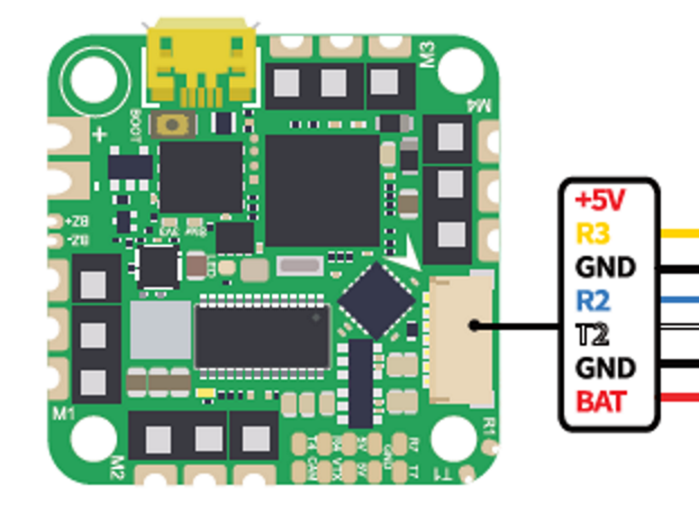

IFlight Beast H7 55A AIO¶
{kind=link}
Specifications¶
Processor
STM32H743 BGA ARM (489MHz), 1MB Flash
Integrated 4 output, BLHeli-S 55A ESC
Sensors
InvenSense MPU6000 IMU (accel, gyro)
DSP310 barometer
Voltage & 300A Current sensor
Power
7.4V ~ 25V DC input power
5V 2.5A BEC for peripherals
Interfaces
5x UARTS
5x PWM outputs, first 4 are internally connected to 4in1 45A BLHeli-S ESC, the fifth for LED
I2C port for external compass, airspeed sensor, etc.
USB port
16MB on board Flash for logging (set LOG_BACKEND_TYPE =4)
Camera input/ VTX output
300A current sensor
Built-in OSD
Size and Dimensions
32.5mm x 32.5mm (25.5 x 25.5mm mount pattern)
8.5g
Warning
This board has no compass and no way to connect an external compass. Applications requiring accurate heading information must rely on ArduPilots Compass-less Operation operation.
Warning
This autopilot does not have a barometer. An external barometer can be added, or operation with an alternate altitude sensor, such as GPS for outdoor use or rangefinder for indoor applications is supported (see EK3_SRC1_POSZ), with the following caveats. In Plane, if GPS is lost, then the user should switch to MANUAL mode immediately to avoid a crash. In Copter, operation is allowed using GPS, but not recommended, due to the imprecision in altitude hold modes. Bear in mind if GPS fails and the vehicle is using it for altitude information, a crash can eventually result due to lack of accurate altitude information.See Using GPS for Altitude Sensing for more information.
Where to Buy¶
Default UART order¶
he UARTs are marked Rn and Tn in the above pinouts. The Rn pin is the receive pin for UARTn. The Tn pin is the transmit pin for UARTn.
SERIAL0 = console = USB
SERIAL1 = Telemetry1 = USART1 (Alternate RC input/output)
SERIAL2 = Telemetry2 = USART2 (DJI)
SERIAL3 = RC Input = USART3
SERIAL4 = GPS = USART4
SERIAL7 = USER = UART7
UART1 supports RX and TX DMA. UART2, UART3 and UART4 support RX DMA. UART7 supports TX DMA
RC Input¶
RC input is configured by default via the USART3 RX input. It supports all RC protocols except PPM. FPort and full duplex protocols will need to use instead,both RX1 and TX1.
Note
If the receiver is FPort or a full duplex protocol, then the receiver must be tied to the USART1 TX pin and SERIAL1_OPTIONS = 7 (invert TX/RX, half duplex), SERIAL1_PROTOCOL set to 23, and RSSI_TYPE =3.
Dshot Capability¶
All motor 1-4 outputs are bi-directional Dshot and PWM capable. However, mixing Dshot and normal PWM operation for outputs is restricted into groups, ie. enabling Dshot for an output in a group requires that ALL outputs in that group be configured and used as Dshot, rather than PWM outputs. The output groups that must be the same (PWM rate or Dshot, when configured as a normal servo/motor output) are: 1/4, and 2/3.
Neopixel Output¶
The LED pin is PWM output 5 and is default setup for use with a NeoPixel 4 led string for notifications.
Battery Monitor¶
The board has a built-in voltage and current sensors.
The correct battery monitor parameters are:
BATT_MONITOR = 4
BATT_VOLT_PIN = 12
BATT_VOLT_MULT ~ 10.9
BATT_CURR_PIN = 13
BATT_AMP_PERVLT ~ 100
These are set by default in the firmware.
Flashing Firmware¶
Usually these boards are sold pre-flashed with Betaflight firmware and require both firmware and bootloader to be updated if you want to use ArduPilot. See Loading Firmware onto boards without existing ArduPilot firmware.
[copywiki destination=”plane,copter,rover,blimp”]